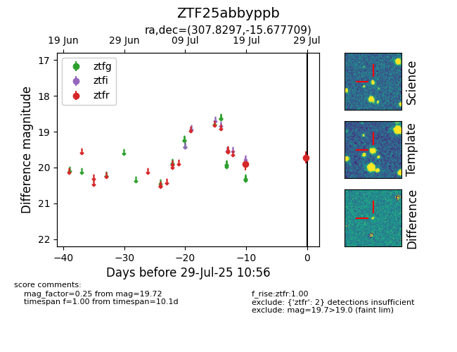

Target ZTF25abbyppb at 2025-07-29 10:56, see:
FINK: fink-portal.org/ZTF25abbyppb
Lasair: lasair-ztf.lsst.ac.uk/objects/ZTF25abbyppb
ALeRCE: alerce.online/object/ZTF25abbyppb
alt names
ZTF25abbyppb (ztf,fink)
coordinates:
equatorial (ra, dec) = (307.8297,-15.67771)
galactic (l, b) = (29.3153,-29.00899)
photometry
last ztfr=19.72
2 ztfr detections
